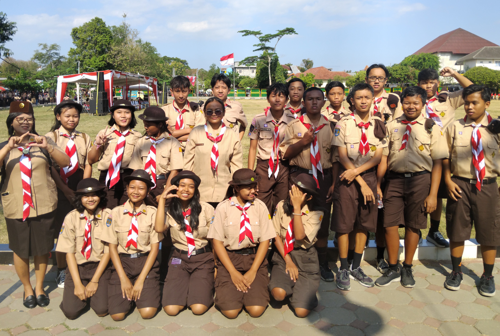

Peringatan Hari Pramuka: Membangun Karakter dan Jiwa Kepemimpinan
Dalam rangka memperingati Hari Pramuka setiap 14 Agustus, SMP Kanisius Wonosari menyelenggarakan kegiatan khusus yang melibatkan seluruh anggota gerakan Pramuka sekolah. Kegiatan ini bertujuan menanamkan nilai-nilai kepramukaan seperti disiplin, mandiri, gotong royong, serta jiwa kepemimpinan.


